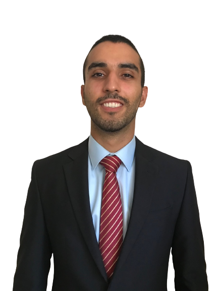
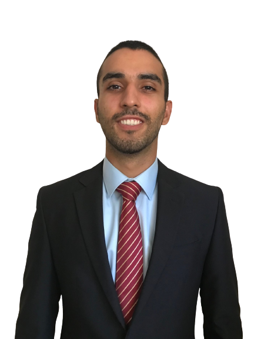
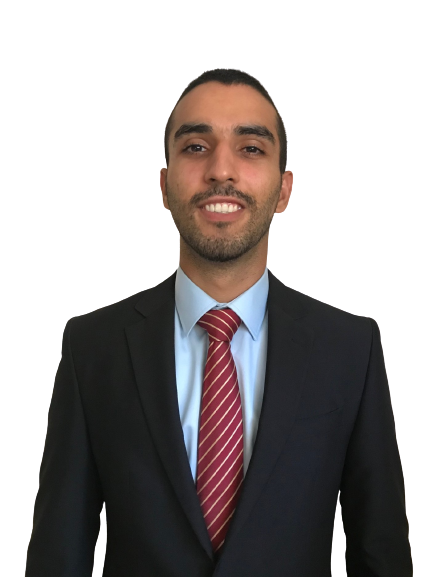
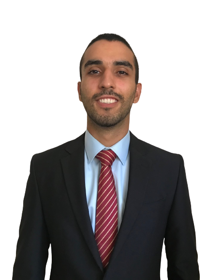

Yuval Azulay
Programmer, Political scientist, Orientalist, Human
Let's keep in touch!
+972-892-2585 
 

Let's keep in touch!
+972-892-2585 
 

2023 - Bachelor of Arts In Political Science and Arabic and Islam.
2024 - Full-Stack Developer Bootcamp.
2015 - Graduation at Administration and Business Department.
Served as Combat and Commander.